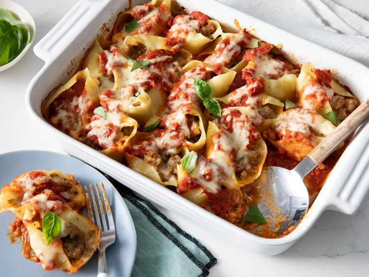

Lasagna

Baked pasta dishes are some of the simplest and most satisfying meals you can whip together on a busy weeknight—they're filling, budget-friendly, and most importantly, kid-friendly. And they're one-dish recipes that you can easily customize to suit your needs. Check out these pasta bakes you can make in your 9x13-inch dish, and consider dinner done.
Ingredients
- 1 pound sweet Italian sausage
- ¾ pound lean ground beef
- ½ cup minced onion
- 2 cloves garlic, crushed
- 1 (28 ounce) can crushed tomatoes
Steps
- The Best Baked Ziti
- Creamy Pumpkin Pasta Bake
- Linda's Lasagna
- Chicken Pot Pie Pasta Bake
- K-Dub's Alfredo Ravioli Bake
- Baked Pasta with Sausage and Baby Portobello Mushroom White Sauce
- Baked Ziti